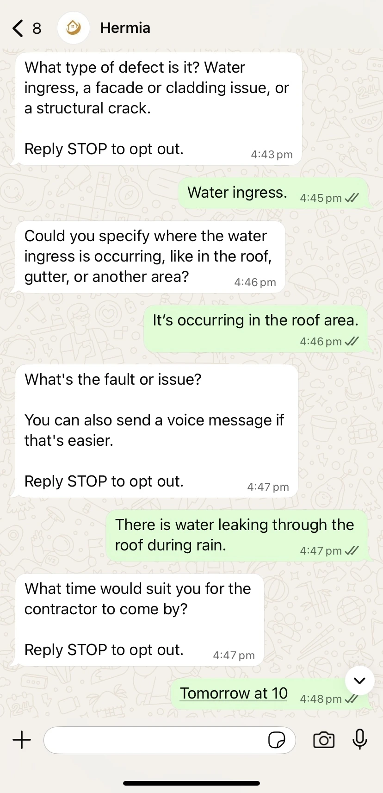
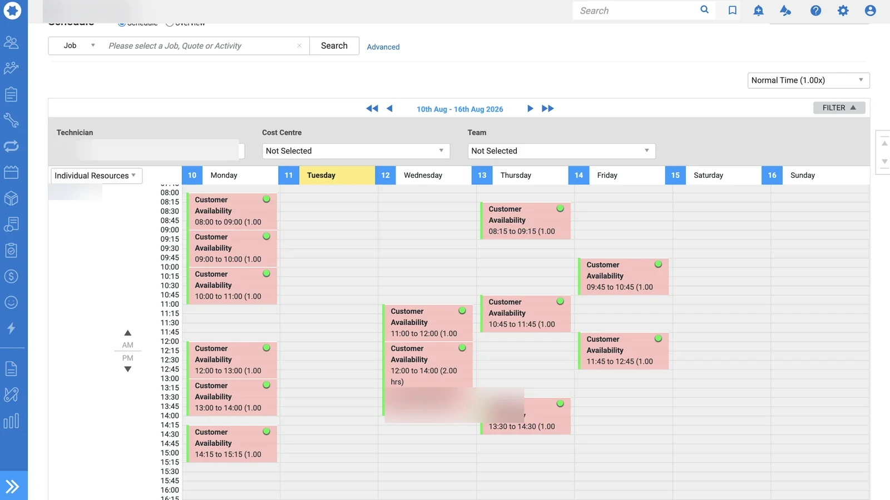

See the conversation.
See the Simpro handoff.
From a question on WhatsApp to a record your office can review. Explore supplied examples of the conversation, prepared lead and scheduling context.

Get past “there’s a leak.”
An incoming message is only a starting point. Hermia follows the questions your business approves, asks for the missing context and keeps the answers with the enquiry, so your office has more than a vague request to work with.
- Your own questions, in your business’s words.
- The reported fault, location and availability in one conversation.
- A clear opt-out route for the person replying.
A brief your office can work with.
The useful detail should not stay buried in a chat. An approved Simpro handoff can carry the reported issue and relevant notes into the record your team uses, ready for a person to review instead of retyping the whole conversation.
- Keep the customer’s account of the problem attached to the lead.
- Give descriptions and notes a clear purpose.
- Let your team assess the work and decide the next step.

Give availability a place to land.
A preferred time is useful only when the right people can see it. In a configured scheduling workflow, customer availability can be captured alongside the enquiry and passed into an approved calendar or schedule for the team to review.
- Collect the customer’s preferred time.
- Keep business hours and approved scheduling rules visible.
- Confirm the booking through the authorised workflow—not by assumption.
The same context. In the right hands.
Your team should not have to piece together a message, an image and an email to understand one enquiry. A prepared docket brings the available detail together and routes it to the recipients your business chooses.
- A concise reported-issue summary.
- Supporting evidence kept with the same enquiry.
- Approved recipients, with access and delivery defined by your business.
Like the direction?
Configure your own.
Your channels. Your questions. Your recipients. Define the workflow you want Hermia to follow for your business.
Configure Hermia Ask a question ↗